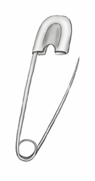
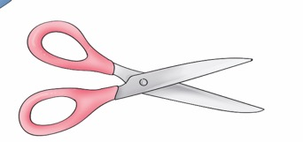
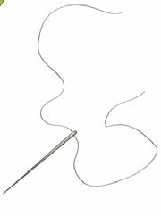
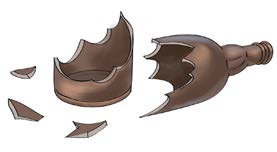
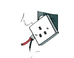

Sura ya Tatu
Mazingira na vitu hatarishi
Ninatambua vitu hatarishi.

Ninaepuka vitu hatarishi ili kutunza afya na maisha yangu.
1

2

3

4
5

6

7
8
9
10
Ninatambua vitu hatarishi.
Ninaepuka vitu hatarishi ili kutunza afya na maisha yangu.




